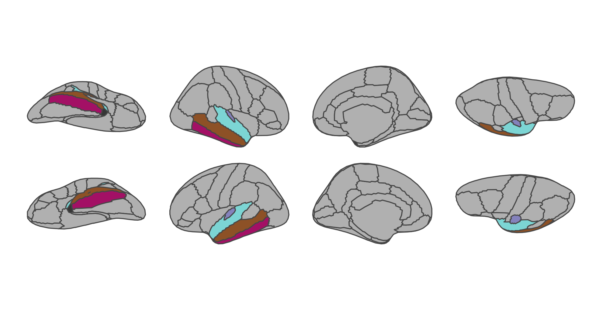

Download PDF
Brain atlases and data structures :: Cheatsheet
Install, inspect and reshape ggsegverse atlases
ggseg_atlas objects, atlas verbs, palettes, meshes and the atlas packages.
Getting atlases
The ecosystem
| Package | Holds |
|---|---|
| ggseg.formats | the atlas class, verbs and FreeSurfer I/O |
| ggseg | 2D plotting (geom_brain()) |
| ggseg3d | 3D plotting (htmlwidget) |
| ggseg.meshes | extra cortical and cerebellar surfaces |
| ggseg.extra | building new atlases, needs FreeSurfer |
| ggsegverse | installs and loads the lot |
dk(), aseg(), suit() and tracula() ship inside ggseg and ggseg3d. Everything else lives in its own package on the r-universe.
Installing
options(repos = c(
ggsegverse = "https://ggsegverse.r-universe.dev",
CRAN = "https://cloud.r-project.org"
))
install.packages("ggsegverse")library(ggsegverse)
ggseg_atlas_repos() # everything available
ggseg_atlas_repos("schaefer") # matching a pattern
installed_ggseg_atlases() # what you already have
install_ggseg_atlas("ggsegYeo2011")
install_ggseg_atlas_all() # all of them, a large downloadggsegverse_packages() # core packages
ggsegverse_deps() # versions, and what is behind
ggsegverse_update() # update the ones that are
ggsegverse_conflicts() # masked function names
ggsegverse_sitrep() # one report covering all of itAtlas packages follow the same shape: library(ggsegYeo2011) then yeo7(), and every atlas is a function.
The ggseg_atlas object
Anatomy
library(ggseg)
library(ggseg.formats)
names(dk())
#> atlas, type, palette, core, data
class(dk())
#> cortical_atlas, ggseg_atlas, list| Slot | Holds |
|---|---|
atlas |
the atlas name |
type |
cortical, subcortical, cerebellar or tract |
core |
one row per region: hemi, region, label |
data |
the geometry, keyed on label |
palette |
named vector of colours, one per label |
core carries the metadata, data the drawing instructions, and the two are cross-checked on construction. Extra core columns (lobe, names) ride along and are available to aes().
What goes in data
| Type | Constructor | Contains |
|---|---|---|
| cortical | ggseg_data_cortical() |
polygons + vertex indices |
| subcortical | ggseg_data_subcortical() |
polygons + one mesh per region |
| cerebellar | ggseg_data_cortical() |
flatmap polygons + SUIT vertices |
| tract | ggseg_data_tract() |
centrelines + tangents |
Vertex indices are 0-based and point into the shared brain mesh.
Inspecting
atlas_regions(dk())
atlas_labels(dk())
atlas_views(dk())
atlas_type(dk())
atlas_geom(dk())
atlas_vertices(dk())
atlas_palette(dk())
atlas_geometry_type(dk())is_ggseg_atlas(dk())
is_cortical_atlas(dk())
is_subcortical_atlas(aseg())
is_cerebellar_atlas(suit())
is_tract_atlas(tracula())plot(dk()) and atlas_plot_palette(dk()) show the regions and the colours.
Reshaping atlases
Regions
Every verb takes an atlas and returns an atlas, so they pipe.
dk() |>
atlas_region_keep("precentral") |>
atlas_regions()| Verb | Does |
|---|---|
atlas_region_keep() |
keep matching regions |
atlas_region_remove() |
drop matching regions |
atlas_region_rename() |
rename, pattern to replacement |
atlas_region_contextual() |
mark as background context |
atlas_region_op() |
the general form behind these |
atlas_core_add() |
add columns to core |
All take (atlas, pattern) and match on region; pass match_on = "label" to act per hemisphere.
Views
dk() |>
atlas_view_keep(c("lateral", "medial")) |>
atlas_views()| Verb | Does |
|---|---|
atlas_view_keep() |
keep these views |
atlas_view_remove() |
drop these views |
atlas_view_reorder() |
set the order |
atlas_view_select() |
keep one view per region |
atlas_view_gather() |
merge views into one |
atlas_view_remove_region() |
drop a region from one view |
atlas_view_remove_small() |
drop slivers below a threshold |
atlas_structure_reorder() sets the order regions are drawn in.
Palettes
pal <- atlas_palette(dk())
head(pal, 3)
pal["lh_precentral"] <- "#5e3c58"
new_atlas <- set_atlas_palette(dk(), pal)A palette must name every label in the atlas, so edit the existing vector rather than passing a short one. Set the type explicitly with set_atlas_type(atlas, "cortical") when an atlas you have built guesses wrong.
Data and meshes
Brain meshes
get_brain_mesh("lh", surface = "inflated")
get_cerebellar_mesh()
ggseg.meshes::get_cortical_mesh("lh", "pial")
ggseg.meshes::get_cerebellar_flatmap()Each mesh is a list of vertices (x, y, z) and faces (i, j, k), at fsaverage5 resolution — 10,242 vertices per hemisphere. The inflated surface ships in ggseg.formats; the rest in ggseg.meshes.
Reading FreeSurfer output
read_freesurfer_stats("lh.aparc.stats")
read_freesurfer_table("aseg.stats")
read_atlas_files("path/to/atlas")
migrate_atlas_files("old/", "new/")read_freesurfer_stats(path, rename = TRUE) tidies the column names into something that joins straight onto an atlas.
Converting and migrating
as_ggseg_atlas(x) # anything -> ggseg_atlas
as_sf_atlas(dk()) # geometry as sf
as_polygon_atlas(x) # geometry as polygons
convert_legacy_brain_atlas(old)Renamed in 0.1–0.2.
brain_regions(),brain_labels()andbrain_views()becameatlas_regions(),atlas_labels()andatlas_views();brain_atlas()becameggseg_atlas();is_brain_atlas()andas_brain_atlas()becameis_ggseg_atlas()andas_ggseg_atlas(). The old names still work and warn.
Building a new atlas
ggseg.extra turns neuroimaging files into atlases. It needs FreeSurfer on the path.
library(ggseg.extra)
create_cortical_from_annotation("lh.aparc.annot")
create_cortical_from_gifti(...)
create_cortical_from_cifti(...)
create_subcortical_from_volume("aseg.mgz")
create_cerebellar_from_volume(...)
create_tract_from_tractography(...)
create_wholebrain_from_volume(...)Then tidy the result with atlas_smooth(), atlas_simplify(), atlas_dilate() and atlas_polish(), and set up a package for it with setup_atlas_repo() and use_atlas_github_actions(). sitrep() reports whether the external tools it needs are present.
Checking your work
Does it render?
library(ggplot2)
dk() |>
atlas_region_keep("temporal") |>
brain_test_plot(
position = position_brain(hemi ~ view)
)
brain_test_plot() draws every region in its palette colour, so a region that has lost its geometry shows up as a hole. plot(atlas) is the quick version, and atlas_plot_palette(atlas) shows the colours on their own.
Validation
ggseg_atlas() checks on construction that:
typeis one of the four known typescorehashemi,regionandlabel- every label in
dataappears incore, and the reverse - the
datacontainer matches the declaredtype
A mismatch is a cli error naming the offending labels, not a silent coercion. is_ggseg_atlas() and the per-type predicates are the cheap checks to run first.
What an atlas package contains
An atlas package is a thin wrapper: the atlas object in data/, a function of the same name that returns it, and a data-raw/ script recording how it was built. setup_atlas_repo() lays this out for you.
library(ggsegYeo2011)
yeo7()
atlas_regions(yeo7())Gotchas
- Atlases are functions:
dk(), notdk. - Vertex indices are 0-based; R is 1-based. Add one before indexing a mesh yourself.
- A palette must cover every label, or
set_atlas_palette()warns and the uncovered regions fall back tona.value. - Cortical meshes share vertex indices across regions, so they cannot be decimated. Subcortical meshes can.
atlas_region_remove()drops the region everywhere; useatlas_view_remove_region()to drop it from one view only.
Learn more
https://ggsegverse.github.io— ecosystem documentationhttps://ggsegverse.r-universe.dev— every atlas packagehttps://github.com/ggsegverse— source and issues